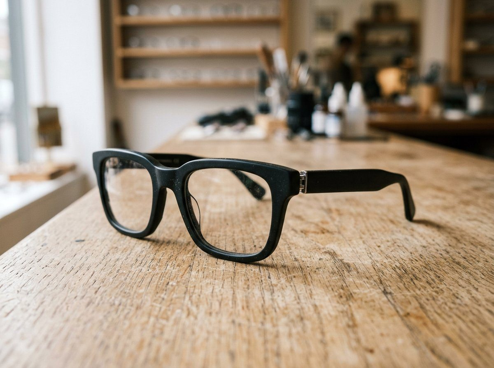

عینک را قبل از سفارش، روی صورتت ببین.
این قفسهٔ آروین است. دکمهٔ پرو کنار هر فریم، همان مدل را با دوربین گوشی روی صورتت مینشاند. لازم نیست هر عینک را جدا جدا از نو باز کنی؛ یکبار دوربین روشن شود، بقیه را همانجا ورق میزنی.
تصویر از گوشی خارج نمیشود. عددها تقریبیاند و جای معاینهٔ اپتومتریست را نمیگیرند.

قفسه
سایز، همان عدد چاپشده روی دسته است: عرض عدسی، پل، طول دسته.
اندازهٔ صورت، کنار عدد فریم
بعد از روشن شدن دوربین، فاصلهٔ مردمک و پهنای صورت خوانده میشود و با سایز همان فریم مقایسه میشود. اگر چیزی نخواند، هنوز پرو را میبینی؛ فقط برگهٔ اندازه خالی میماند.
یک فریم را پرو کن تا اینجا پر شود.
این ابزار معاینه نیست. برای نمره و ساخت عدسی، به اپتومتریست مراجعه کن.
اگر این دکمه را روی سایت خودت میخواهی
یک لودر کوچک، و کنار هر محصول یک دکمه با کد همان فریم. موتور تشخیص چهره فقط بعد از کلیک مشتری بار میشود.
- Shopify، WooCommerce، یا هر صفحهٔ HTML
- کاتالوگ از
products.json - دوربین فقط با اجازهٔ صریح باز میشود
<script src="/tryon/dist/tryon-loader.js"
data-tryon-products="/tryon/products.json"
defer></script>
<button data-tryon-open
data-tryon-sku="AR-101">
پرو این عینک
</button>